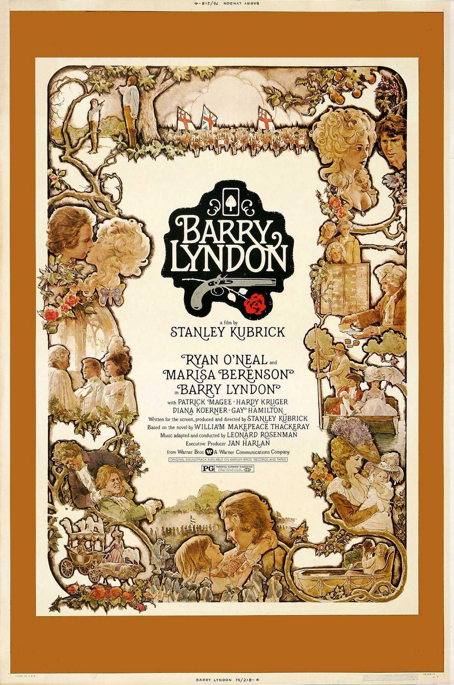
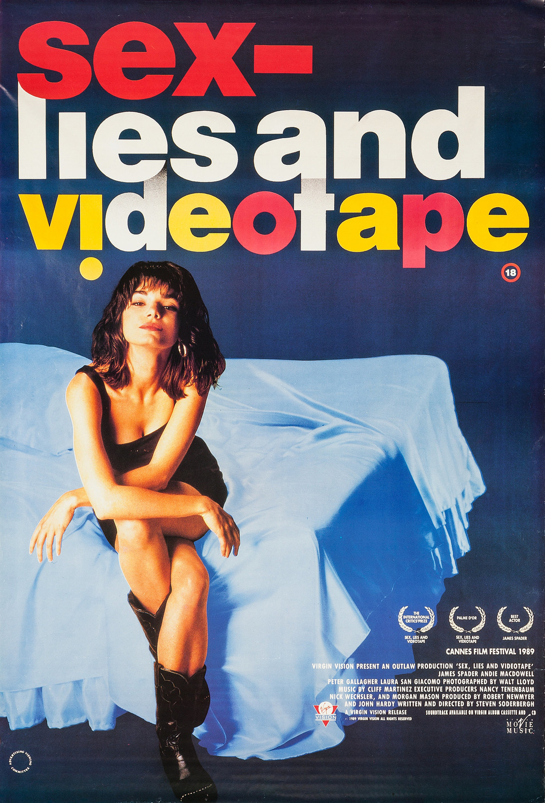
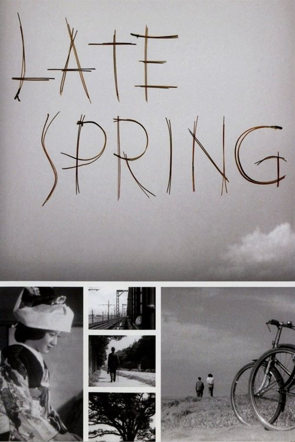
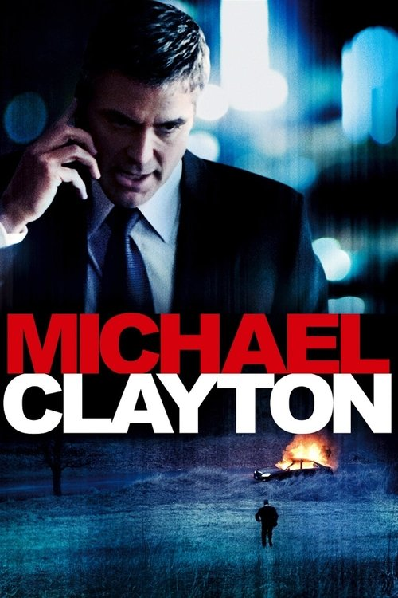

Cinema
Toast Crunch
A film club by the Nintendo Pipeline community
Dead Ringers (1988)
Identical twin gynecologists Beverly and Elliot Mantle (both played by Jeremy Irons) run a prestigious Toronto fertility clinic, sharing everything — including the women in their lives, who rarely know which twin they're with. Their tightly entwined existence begins to unravel when troubled actress Claire Niveau enters the picture: Elliot seduces her first, then passes her to Beverly, but Beverly falls in love. As Beverly's grip on reality slips into addiction and paranoia, the symbiosis between the brothers spirals toward a chilling, inseparable ruin. Cronenberg's clinical, desaturated psychological horror is among his most disquieting works — a meditation on identity, codependence, and the fragility of the self.
| Director | David Cronenberg |
|---|---|
| Year | 1988 |
| Runtime | 116 min |
| Genre | Psychological Horror / Drama |
| Starring | Jeremy Irons, Geneviève Bujold, Heidi von Palleske |
| Awards | 10 Genie Awards incl. Best Picture & Director; NY/LA/Boston Film Critics Best Actor (Irons) |
| Stream | Criterion Channel, Check JustWatch for current availability |
Previous Selections
March 2026

Dir. Stanley Kubrick · 185 min · Mar 1–15

Dir. Steven Soderbergh · 100 min · Mar 16–31
February 2026

Dir. Yasujirō Ozu · 108 min · Feb 1–14

Dir. Tony Gilroy · 119 min · Feb 15–28